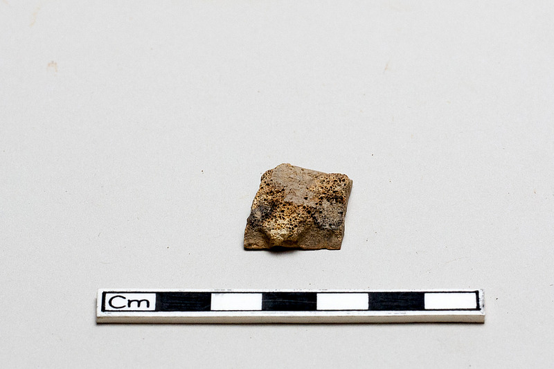

01 / OVERVIEW
课题概要
Animal Trace — 以动物制品为镜，审视人与动物的千年关系
本课题以动物制品为引导线索，通过数字媒体艺术的手段，追溯人类使用动物制品��历史谱系——从旧石器时代以兽皮御寒、以兽骨制作工具的生存驱动，到商周时期象牙雕刻和龟甲占卜的礼仪化，再到丝绸之路上的象牙、犀角贸易，直至当代每年高达200亿美元的非法野生动物贸易。
作品集包含数据可视化装置、交互投影、生成艺术、AR体验、声音可视化等多种数字媒体形式，覆盖16种受威胁的动物物种。核心目标是让观众从旁观者变为思考者——不是被动接受道德说教，而是在沉浸式的视觉体验中主动反思人与动物的伦理关系。
「十万年前，人类用兽皮御寒——那是生存。今天，象牙被雕刻成奢侈品——这是掠夺。」
02 / BACKGROUND
研究背景
全球野生动物贸易的规模与影响
野生动物及其制品的非法贸易是全球第四大非法贸易，仅次于毒品、人口贩卖和假冒商品，年交易额估值高达200亿美元。1973年《濒危野生动植物种国际贸易公约》（CITES）签署，1989年象牙国际贸易禁���生效，然而盗猎和走私从未真正停止。
41.5万
非洲象现存数量（1979年为130万）
2
北方白犀牛幸存个体（功能性灭绝）
~3900
全球野生虎存栏量
100万+
十年间被盗猎的穿山甲数量
作为数字媒体艺术专业的学生和未来的情報デザイン研究者，我试图用视觉语言而非文字报告来呈现这些数据——因为数字是抽象的，而图像和交互体验可以让抽象的数字产生情感重量。
03 / THEMES
表达理念
作品集试图传达的核心思想
- 从生存到掠夺：追溯动物制品从"生存必需"到"奢侈消费"的历史转变，揭示人类欲望如何将一个原本基于生存需求的行为扭曲为一场全球性的生态危机
- 对话而非说教：拒绝道德绑架式的表达，以沉浸体验和认知冲突取代单向的道德谴责——让观众在感受中自己得出结论
- 数据的情感化：将CITES、IUCN等数据库中的冷数字转化为可感知的视觉叙事——每一个数字背后都是一个正在消失的物种
- 媒介即信息：运用交互装置、生成艺术、3D可视化等数字媒体手段，让"媒介的形式"本身成为叙事的一部分
- 跨文化视角：融合中国考古发现与全球保护数据，呈现一个既具本土深度又有全球视野的叙事
- 没有标准答案：不给出"正确做法"的结论，而是呈现问题的复杂性——因为真正的思考始于认识到没有简单的答案
04 / RELATIONS
人与动物的关系
从生存依赖到伦理觉醒的二十四种关系形态
画像出典：Smithsonian（甲骨文）· 各博物馆Open Access · 自行摄影
画像出典：Smithsonian（甲骨文）· 各博物馆Open Access · 自行摄影
🦴

生存依赖与早期关系
- 生存依赖 — 人类依赖野生动物获取肉食、皮毛、骨骼工具
- 狩猎伙伴 — 狼（狗的前身）与人类形成合作关系
- 共栖关系 — 动物主动靠近人类聚落，形成非驯化的共生
- 精神纽带 — 穿孔兽牙项链、刻划骨片，动物成为原始信仰载体
🐂

驯化与管理
- 驯化关系 — 人类开始主动驯养动物，从"狩猎者"转变为"管理者"
- 劳力利用 — 牛被用于耕地，动物从食物来源扩展为劳动力
- "次级产品"开发 — 不杀死动���也能获取资源（奶、毛、蛋）
🐢

仪式与权力
- 仪式关系 — 动物成为祭祀和殉葬的对象
- 权力象征 — 动物成为王权、神权的物质载体
- 文字载体 — 动物骨骼成为记录文明的载体（甲骨文）
- 社会等级 — 不同阶层对动物资源的获取权不同
🛤️

贸易与商品化
- 商品化 — 动物制品成为全球贸易的核心商品
- 奢侈品贸易 — 象牙、犀角、虎皮、麝香等珍稀材料跨区域流通
- 符号化消费 — 动物制品成为身份象征与黑市目标
🏭

工业化、科学与军事
- 工业化利用 — 动物成为标准化工业原料
- 科学实验对象 — 动物为人类医学进步牺牲
- 军事依赖 — 动物深度卷入人类战争
- 实用与审美统一 — 动物材料兼具功能性与美学价值
🐕

伴侣、伦理与关系分层
- 动物伴侣 — 部分动物从"资源"转变为"家人"
- 伦理觉醒 — 人类开始反思对动物的权利与责任
- 关系分层 — 不同动物在人类社会中地位分化
- 民族身份载体 — 动物制品成为民族文化的物质载体
04 / STATUS
动物制品现状
16种受威胁物种与动物制品贸易
| 动物 | 制品 | IUCN | CITES | 现状 |
|---|---|---|---|---|
| 非洲象 | 象牙 | 濒危(EN) | 附录I | 从130万头锐减至41.5万头，每15分钟一头被猎杀 |
| 白犀牛 | 犀角 | 近危(NT) | 附录I/II | 北白犀仅存2头雌性，功能性灭绝 |
| 孟加拉虎 | 虎皮·虎骨 | 濒危(EN) | 附录I | 全球野生仅约3900只 |
| 玳瑁海龟 | 龟甲 | 极危(CR) | 附录I | 三代内种群下降80%以上 |
| 梅花鹿 | 鹿角·兽皮 | 无危(LC) | — | 养殖为主，野生种群在中国受一级保护 |
| 金刚鹦鹉 | 羽毛 | 无危(LC) | 附录I/II | 宠物贸易导致野生种群急剧下降 |
| 湾鳄 | 皮革 | 无危(LC) | 附录I/II | CITES监管下的合法养殖与非法捕猎并存 |
| 中华穿山甲 | 鳞片 | 极危(CR) | 附录I | 十年超100万只被盗猎，非法贸易量最大的哺乳动物 |
06 / SOURCES
核心出处
11部关键文献，覆盖考古学·历史学·动物伦理·全球贸易
| 领域 | 核心文献 | 覆盖内容 |
|---|---|---|
| 考古 | 贾兰坡《中国旧石器时代》1957 袁靖《中国动物考古学》2015 张光直《美术、神话与祭祀》2002 王宇信《甲骨学通论》2015 | 旧石器生存依赖、骨器、装饰品、祭祀殉葬、甲骨文、动物驯化 |
| 贸易 | Frankopan《The Silk Roads》2015 Schafer《The Golden Peaches of Samarkand》1963 | 丝绸之路动物制品贸易、象牙犀角虎皮麝香、全球贸易网络 |
| 伦理 | Singer《Animal Liberation》1975 Kolbert《The Sixth Extinction》2014 Haraway《The Companion Species Manifesto》2003 | 动物权利、物种危机、关系分层、伦理觉醒 |
| 综合 | Diamond《Guns, Germs, and Steel》1997 田自秉《中国工艺美术史》2010 | 驯化管理、实用与审美的统一、文明与动物的宏观叙事 |
其余17篇补充文献详见 MYWEB/portfolio/research/人与动物的关系_出处汇总.md